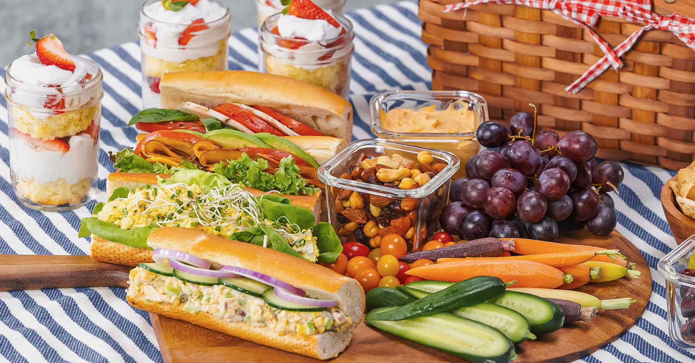
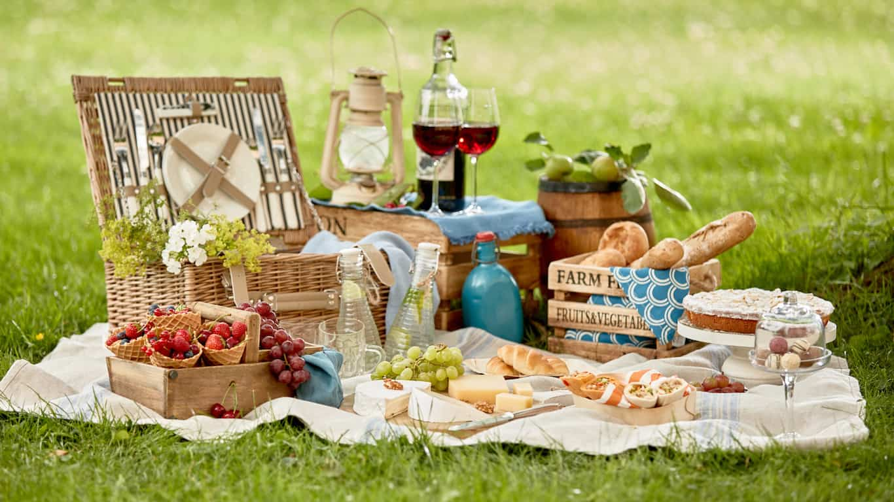

Classic picnic snacks
The crowd-pleasers of every picnic. From a savory dip with seven layers of flavor, to sandwiches of all kinds, to chocolate chip cookies, find all the classic picnic treats right here.
Everyone loves a picnic! With a few favorite recipes, planning and preparation can be a breeze. We've tested and compiled all the options into a database of the most wonderful treats to enjoy outside. It's picnic time, let's go!
The crowd-pleasers of every picnic. From a savory dip with seven layers of flavor, to sandwiches of all kinds, to chocolate chip cookies, find all the classic picnic treats right here.
Fresh and healthy, these snacks are great whether you're vegetarian or not. Try some homemade hummus, deviled eggs, and a unique and tangy watermelon salad!
Picnic, but make it elegant! Just bring along a bottle of wine or even champagne, spread a lovely blanket with the finest snacks, and enjoy yourself in style.
In 2023, we got tired of eating food inside. When it's sunny and you've got a picnic basket, it's time to gather a few friends and some tasty snacks and head outside. We created Picnic Snacks to share the joy of this experience with you. It's easy and fabulous.